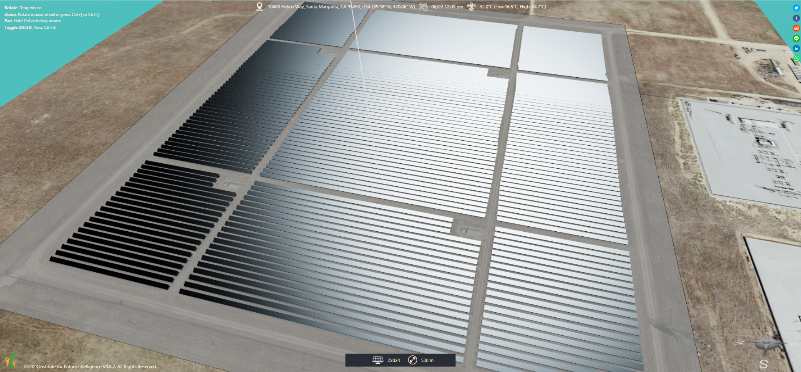
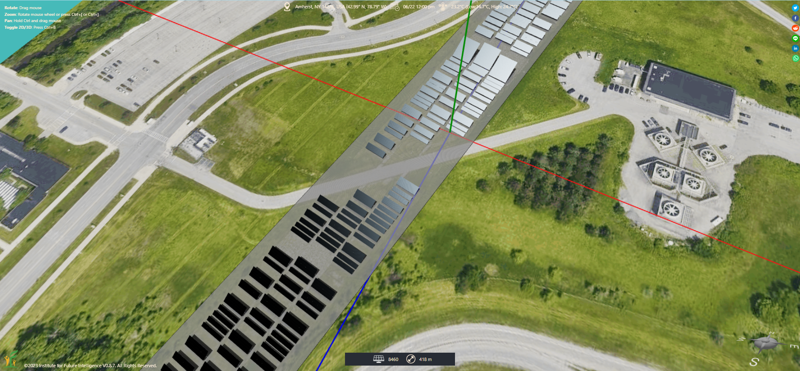
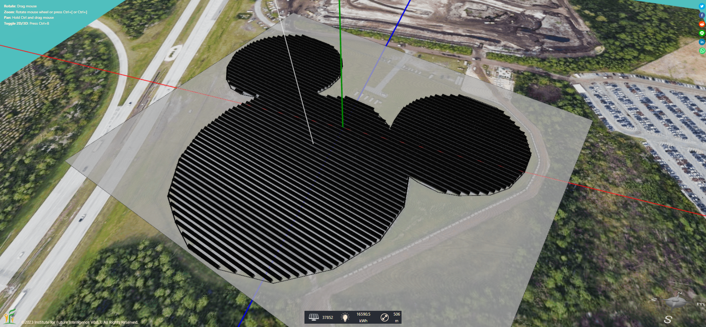
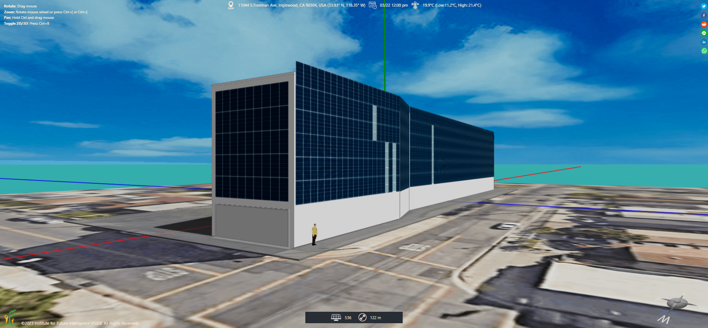

Combining Solar Design and Art
Unique solar panel designs that integrate art and architecture — shedding light on how solar can fit the landscape.
A major criticism of solar panels is that they do not fit the architecture and landscape well to the point that they become eyesores to some people. The design of an efficient solar farm may look like the image below (which is not an issue if it is far away from population centers). But this shortcoming may greatly limit the large-scale deployment of solar power distributed in our neighborhoods, communities, and cities. In this article, I will show you some unique designs of solar panel arrays that may shed light on how designers can mitigate this aesthetics problem.

The Solar Strand
The Solar Strand is an award-winning design that resembles a DNA fingerprint, constructed in the campus of the University of Buffalo in the state of New York.

The Mickey Mouse Solar Farm
The Mickey Mouse Solar Farm is a solar farm that has the shape of one of Disney's famous characters. It is expected to power 40% of Disney World's yearly energy consumption.

Solar fçades
Solar façades represent an important application of building-integrated photovoltaics (BIPV).
